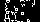

How this works
tldr: machine learning detects screens in images
I took a speedrun of jump king and extracted about 5 seconds for each screen. From this I extracted the frames for further processing.
To reduce the complexity the images are resized to 40x22 pixels and the edges are detected. This reduces the information of each image from 1920*1080*255*255*255 = 34383139200000 (pixels * rgb information) to 40*22*2 = 1760 (pixels * black or white).
Below are examples of what the machine learning models sees.
Screen 20


Screen 11


As you can see there are clear differences between different screens. These differences can also be detected by machine learning models.
Actually I am using 5 different machine learning models. Quin often has stuff on screen (donos, rolls, browser window due to stalling) which is obviously not included in the learning data from the speedrun. I noticed when using a single model that it would get confused and miss classify images despite having over 99% accuracy on frames from the speedrun. So I just use 5 models and let them each classify images independently. If 4 or more agree on a screen then that probably true.
The rest is just applying the preductions to the streams and plotting the results.